MediLink, the Integrated Healthcare System of the Municipality of Oas, connects patients with the Municipal Health Office. Residents book appointments online; doctors use MediLink to see their schedule, open each patient's record, and write findings, orders and prescriptions in one place.
As a Doctor you can:
see your appointments in a calendar (month, week, day or agenda list);
find a patient and open the patient's full record;
record vital signs, medication, allergies, diagnosis, diet advice, pain areas, notes and treatment plans;
write prescriptions, and request laboratory and imaging tests;
view laboratory and imaging results and attachments;
mark an appointment as complete;
manage the list of services you offer and their fees; and
view a report of your consultations.
IMPORTANTSample data only. All patients, doctors, appointments, results, prices and pharmacies shown in this manual are sample data used for training. They are not real records.
NOTE Screens in this manual were captured from the live system on 24 October 2026 with a doctor account.
1.2 Signing in
Open a web browser and go to medilink.oas.lguapp.com.
The MediLink home page opens. Click LOGIN at the top right (Figure 1.1).
Sign in with the doctor account given to you by the system administrator.
After signing in, MediLink opens the Appointment calendar (see Section 2).
Figure 1.1. The MediLink home page.
1LOGIN button
IMPORTANT Keep your password private. Each doctor must sign in with his or her own account so that every record shows who entered it.
1.3 The Doctor screen
Every page for the doctor has the same frame (Figure 1.2).
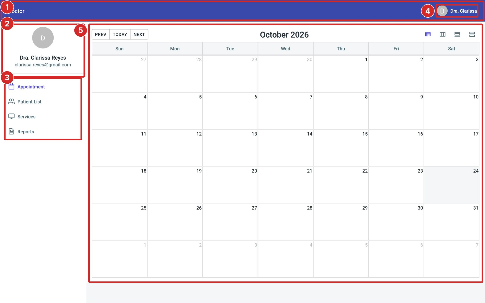
Figure 1.2. The Doctor screen, showing the Appointment calendar.
1Top bar2Your profile (photo, name and email)3Main menu4Account menu5Work area
Part
What it does
1 Top bar
Shows that you are signed in with the Doctor role.
2 Your profile
Your photo, name and email. Click your photo or name to open your account settings (Section 9).
3 Main menu
Appointment (Section 2), Patient List (Section 3), Services (Section 7) and Reports (Section 8). The page you are on is shown in blue.
4 Account menu
Your name at the top right. Click it for Account and Logout (1.4).
5 Work area
The content of the page you opened.
1.4 Account menu and signing out
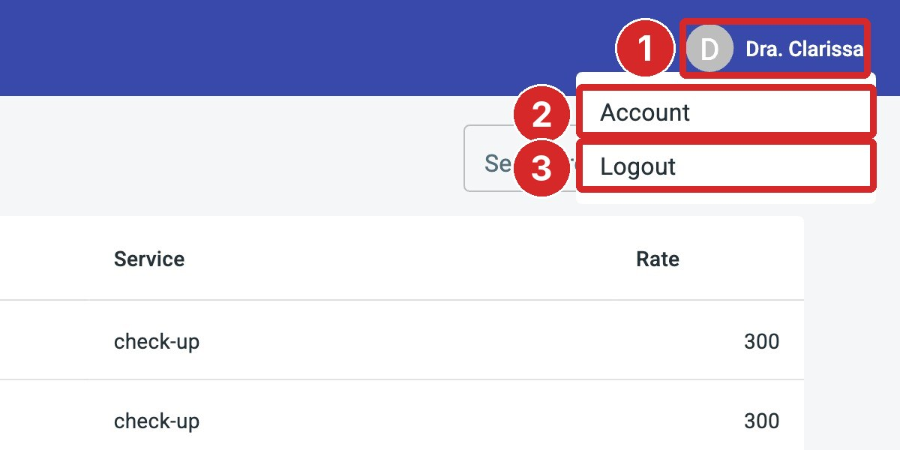
Figure 1.3. The account menu at the top right.
1Your name (click to open the menu)2Account3Logout
Click Account to change your profile, email or password (Section 9).
Click Logout to sign out. Always sign out when you leave a shared computer.
SECTION 2
Appointments
The Appointment page is a calendar of the consultations booked with you. From an appointment you can open the patient's record.
Click Appointment in the main menu. The calendar opens on the current month. Each appointment appears on its date as a blue bar with the time, the service and the patient's name.
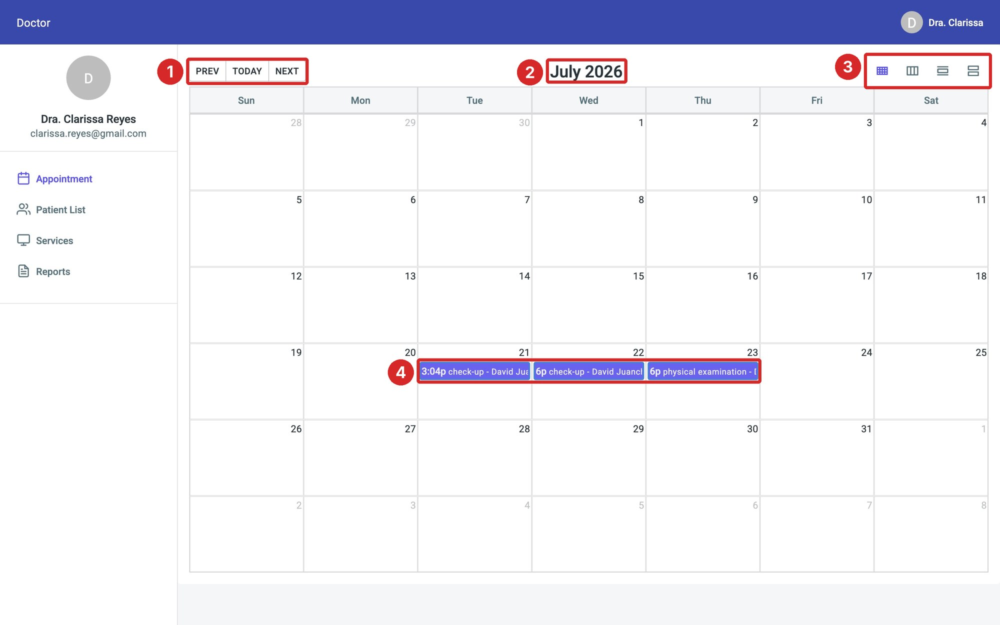
Figure 2.1. The calendar in Month view.
1PREV, TODAY and NEXT buttons2Month shown3View buttons: Month, Week, Day, Agenda4Appointments
Click PREV or NEXT to move to the previous or next month (or week or day, depending on the view).
Click TODAY to return to the current date. Today is shaded in the calendar.
Click an appointment to see its details (2.3).
2.2 Week, Day and Agenda views
Use the four buttons at the top right of the calendar to change the view.
Button
View
Use it to
First
Month
See the whole month at a glance (Figure 2.1).
Second
Week
See one week by hour, Sunday to Saturday (Figure 2.2).
Third
Day
See one day by hour (Figure 2.3).
Fourth
Agenda
See a list of the month's appointments grouped by date, with the time of each (Figure 2.4).
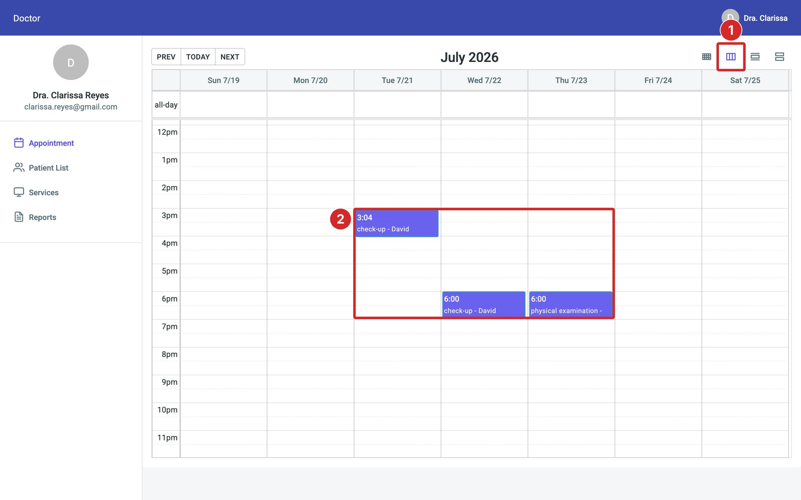
Figure 2.2. Week view.
1Week button2Appointments placed at their time
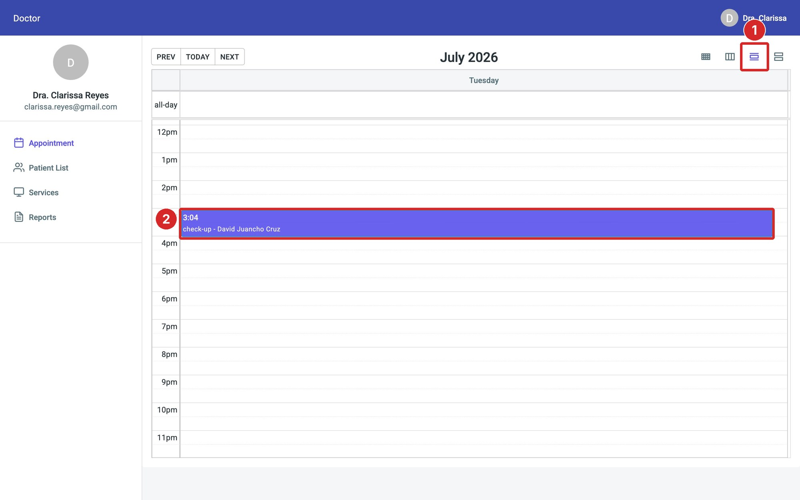
Figure 2.3. Day view.
1Day button2Appointment
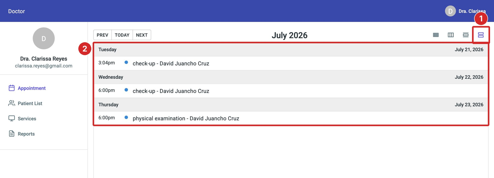
Figure 2.4. Agenda view.
1Agenda button2Appointments listed by date
NOTE In Week and Day views, scroll inside the calendar to see earlier or later hours.
2.3 Viewing an appointment
Click an appointment in any view. A Details panel opens on the right.
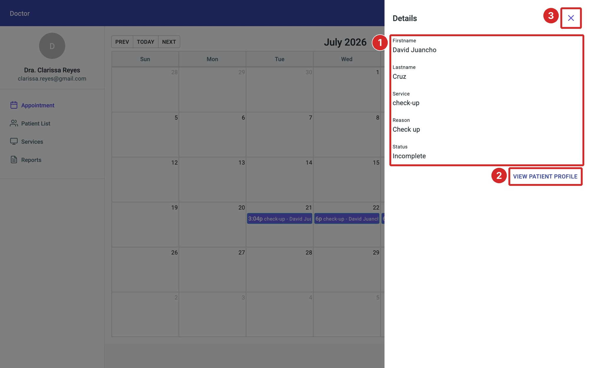
Figure 2.5. Appointment details.
1Patient first and last name, service, reason and status2VIEW PATIENT PROFILE3Close (X)
Field
What it shows
Firstname / Lastname
The patient who booked the appointment.
Service
The service booked, for example check-up.
Reason
The reason the patient gave when booking.
Status
Incomplete until you mark the appointment complete (4.1).
Click VIEW PATIENT PROFILE to open the patient's record (3.2).
Or click X to close the panel.
SECTION 3
Patient List
The Patient List shows all of your patients. From here you open a patient's record.
4.1 Appointments tab and completing an appointment
The Appointments tab lists the patient's appointments with the date and time, service and status (Figure 3.3). When you finish a consultation, mark it complete:
On the appointment row, click the arrow under Next Action.
A Details panel shows the service, its amount (fee) and the reason for the visit.
Click SET COMPLETE to mark the consultation as done.
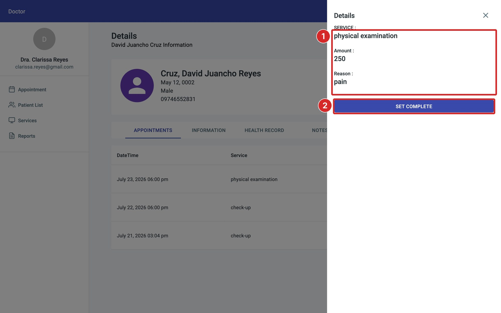
Figure 4.1. Completing an appointment.
1Service, amount and reason2SET COMPLETE button
WARNING Click SET COMPLETE only after the consultation is finished. This manual did not test what happens after the click, so check with the administrator whether a completed appointment can be reopened.
4.2 Information tab
The Information tab shows the patient's personal details: first name, last name, middle name, civil status, street, barangay, city, contact number and religion. You can view these details but not change them here.
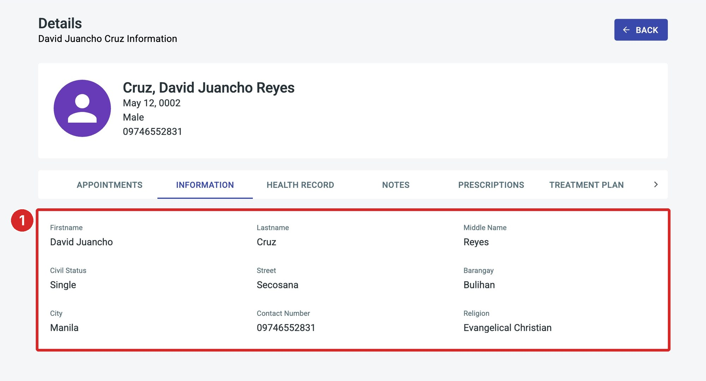
Figure 4.2. The Information tab.
1Patient details
4.3 Health Record and Pre-Lab
The Health Record tab has its own menu on the left: Pre-Lab, Medication, Allergies, Diagnosis, Diet, Pain Monitoring and Vitals Monitoring. It opens on Pre-Lab, which shows the patient's current health record.
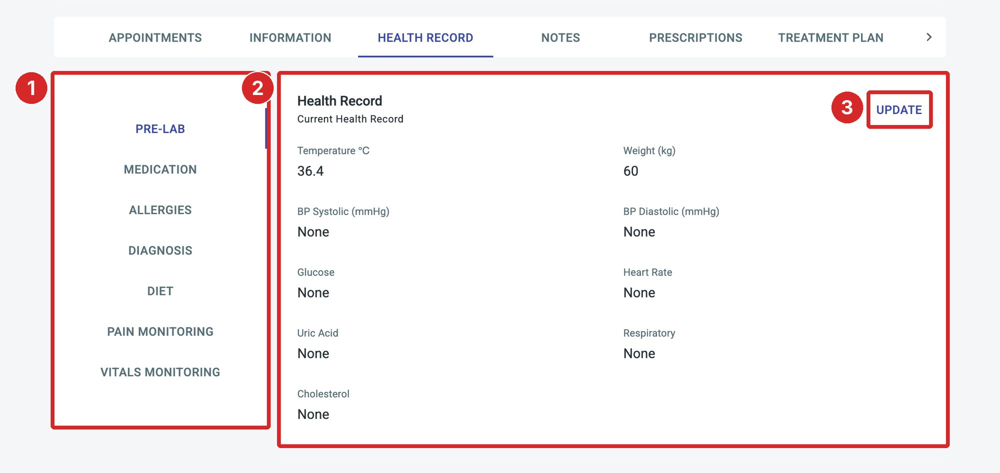
Figure 4.3. Health Record, Pre-Lab.
1Health Record menu2Current health record3UPDATE button
The current health record shows temperature (℃), weight (kg), blood pressure systolic and diastolic (mmHg), glucose, heart rate, uric acid, respiratory rate and cholesterol. None means no value has been entered. To record new readings:
Click UPDATE. The Update Health Records panel opens with the current values.
Type the new readings in the fields you measured.
Click UPDATE to save, or CLOSE to leave without saving.
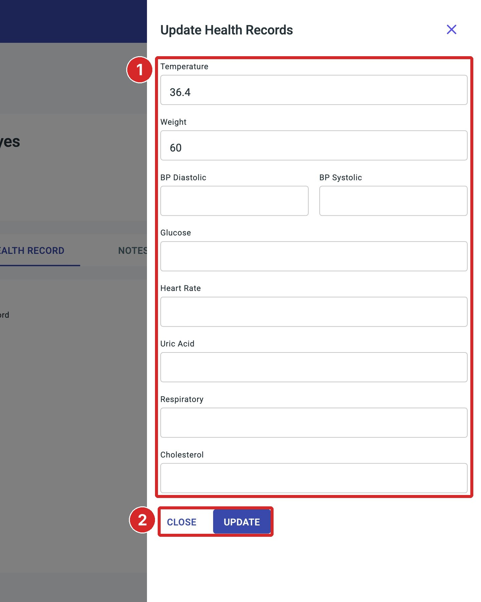
Figure 4.4. The Update Health Records panel.
1Readings2CLOSE and UPDATE buttons
4.4 Medication
Medication lists the medicines the patient should take and when.
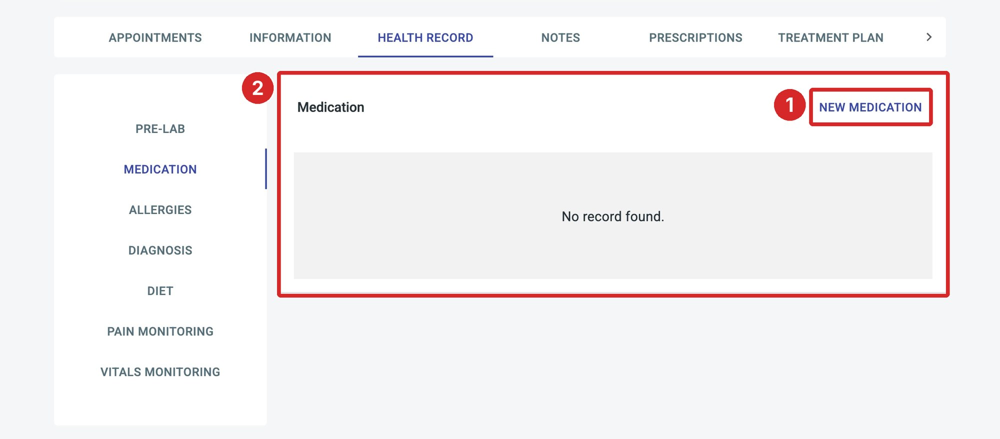
Figure 4.5. Medication.
1NEW MEDICATION button2Medication list
Click NEW MEDICATION.
Under Meals, choose when the medicine is taken: Before or After Breakfast, Lunch or Dinner.
Under Description, type the medicine and dose. Use the toolbar for bold, italic, underline, links and lists.
Click ADD, or CLOSE to cancel.
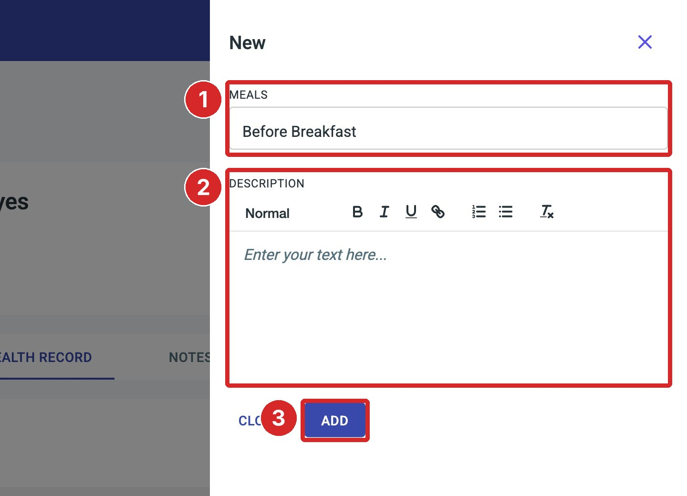
Figure 4.6. The New Medication panel.
1Meals2Description3ADD button
4.5 Allergies
Allergies shows the patient's known allergies, for example Penicillin, in a text box with a formatting toolbar. Check this before prescribing.
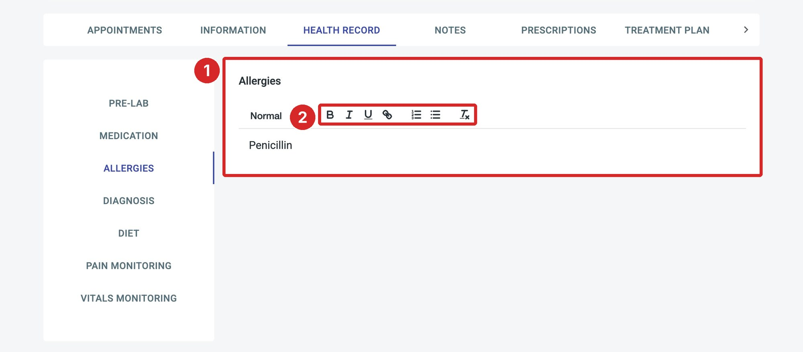
Figure 4.7. Allergies.
1Allergies2Formatting toolbar
NOTE No Save button was shown on the Allergies screen when this manual was prepared. Confirm with the administrator how changes to allergies are saved.
4.6 Diagnosis
Diagnosis lists the diagnoses recorded for the patient, for example Urinary Tract Infection.
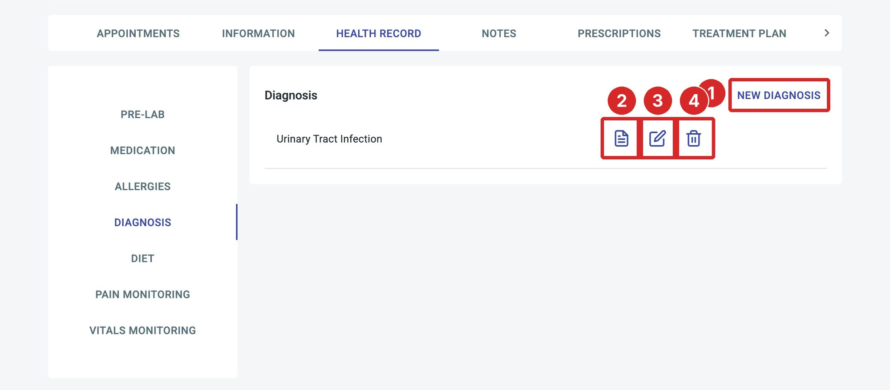
Figure 4.8. Diagnosis.
1NEW DIAGNOSIS button2View3Edit4Delete
To add a diagnosis, click NEW DIAGNOSIS, type the Diagnosis and any Remarks, then click ADD.
To read a diagnosis in full, click the view icon (2).
To correct one, click the edit icon (3), change the text and click SAVE.
The bin icon (4) deletes the diagnosis.
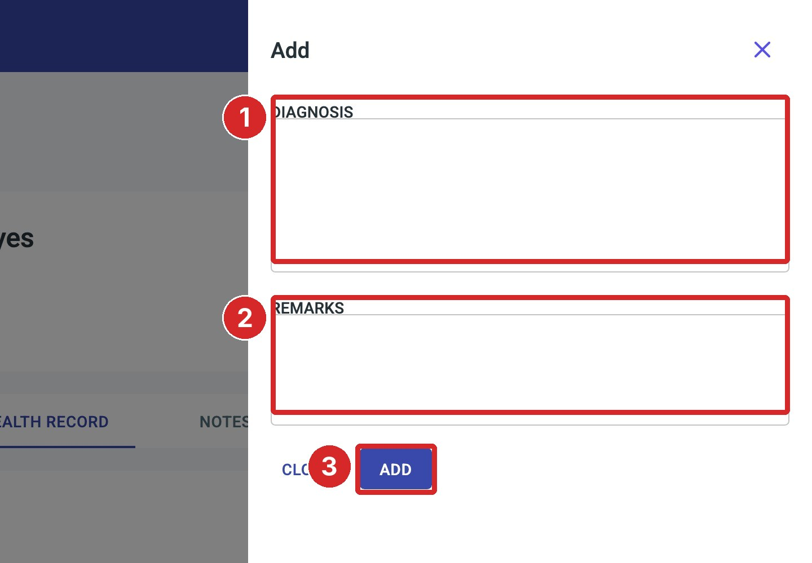
Figure 4.9. The Add diagnosis panel.
1Diagnosis2Remarks3ADD button
WARNING Deleting a diagnosis removes it from the patient's record. Delete only an entry made by mistake.
4.7 Diet
Diet holds the diet you suggest for the patient.
Click NEW DIET.
Under Meals, choose Breakfast, Lunch, Dinner or Snacks.
Type the advice under Description.
Click ADD, or CLOSE to cancel.
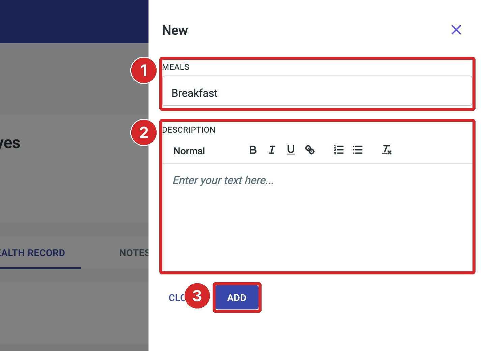
Figure 4.10. The New diet panel.
1Meals2Description3ADD button
4.8 Pain Monitoring
Pain Monitoring shows a body chart and a list of the pain the patient reported, with the date, description, pain level and whether the area is on the front or back of the body.
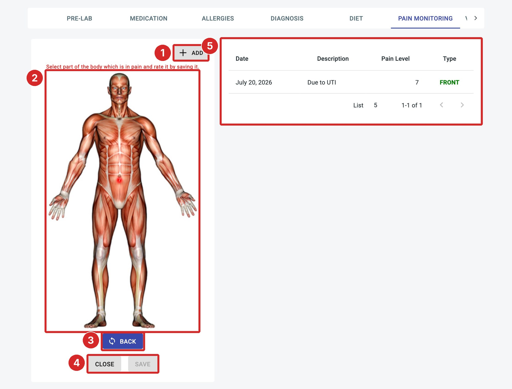
Figure 4.11. Pain Monitoring in add mode.
1ADD button2Body chart3BACK / FRONT switch4CLOSE and SAVE buttons5Pain records
Click ADD. The message Select part of the body which is in pain and rate it by saving it appears above the chart.
Click BACK to show the back of the body, or FRONT to return to the front.
Click the part of the body where the patient feels pain and rate it.
Click SAVE, or CLOSE to cancel.
NOTE The rating step after clicking the body was not tested for this manual, so the screen that asks for the pain level is not shown.
4.9 Vitals Monitoring
Vitals Monitoring charts the patient's readings over time. Choose a reading at the top: BP, Temperature, Weight, Cholesterol, Glucose, Heart Pulse, Uric Acid or Respiratory. The chart title shows how many tests are recorded.
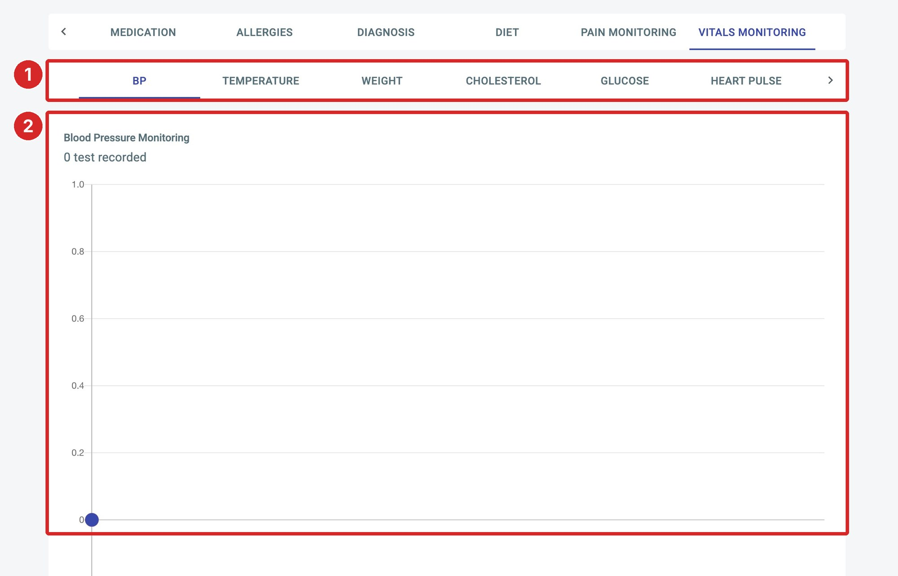
Figure 4.12. Vitals Monitoring.
1Readings2Chart
SECTION 5
Notes, Treatment Plan and Prescriptions
Use these tabs to write consultation notes, plan treatment and prescribe medicines.
The Notes tab lists your consultation notes by date with the initial diagnosis.
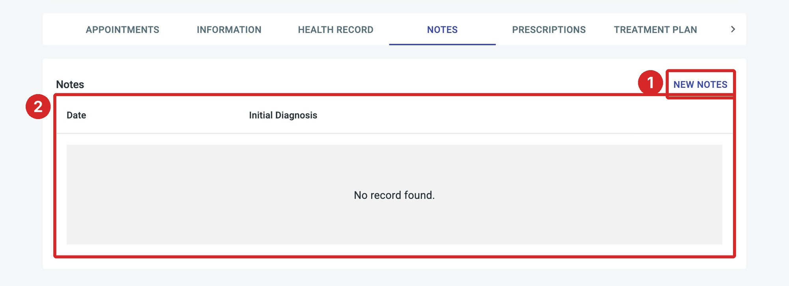
Figure 5.1. The Notes tab.
1NEW NOTES button2Notes list
Click NEW NOTES.
Type the Initial Diagnosis.
Type your findings under Notes.
Click SAVE, or CLOSE to cancel.
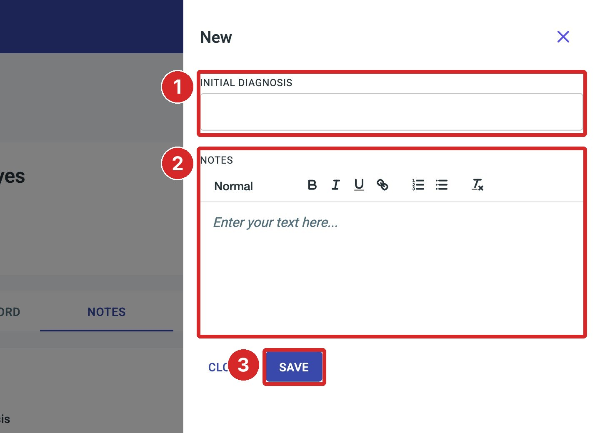
Figure 5.2. The New notes panel.
1Initial Diagnosis2Notes3SAVE button
5.2 Treatment Plan
The Treatment Plan tab lists planned treatments with their schedule.
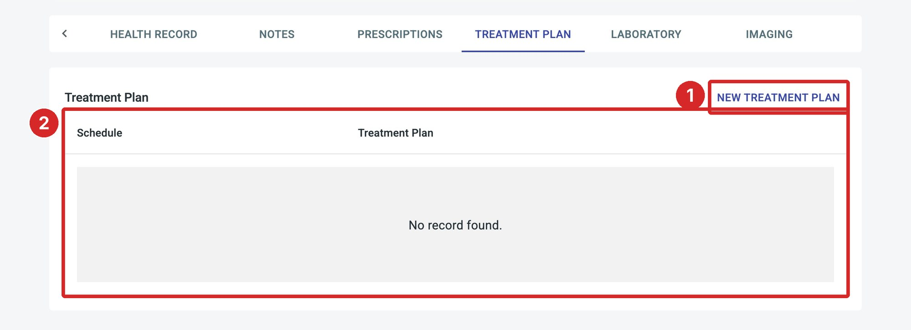
Figure 5.3. The Treatment Plan tab.
1NEW TREATMENT PLAN button2Treatment plans
Click NEW TREATMENT PLAN.
Check the Schedule Date. It starts with the current date and time; change it to the planned date.
Type the plan under Treatment Plan.
Click SAVE, or CLOSE to cancel.
Figure 5.4. The New treatment plan panel.
1Schedule Date2Treatment Plan3SAVE button
5.3 Prescriptions
The Prescriptions tab has three parts on the left:
Part
What it is for
LIST
Saved prescriptions, with date and prescription number.
CLINIC
A prescription for a pharmacy chosen from the list (for example TGP or Malolos Pharmacy).
UNSAVED
A prescription you are still building. Add products, then save it.
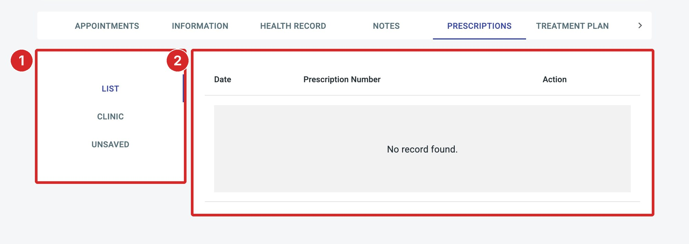
Figure 5.5. The Prescriptions tab, LIST.
1LIST, CLINIC and UNSAVED2Saved prescriptions
To write a prescription:
Click UNSAVED.
Click ADD PRODUCT. Type the Product Name, choose the Type (Bottle, Box, Can, Capsule, Liniment, Sachet, Suspension, Powder or Tablet), type the Quantity and the Instruction (sig), then click ADD TO UNSAVE.
Repeat for each medicine. Each one appears in the list with its quantity, type and sig.
Click SAVE PRESCRIPTION. Saved prescriptions are listed under LIST.
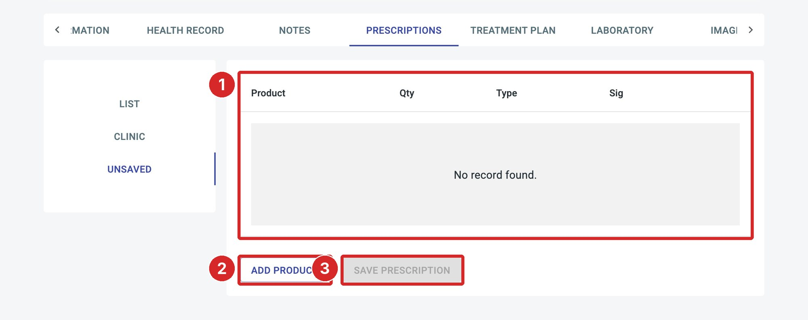
Figure 5.6. Building a prescription (UNSAVED).
1Products added so far2ADD PRODUCT3SAVE PRESCRIPTION
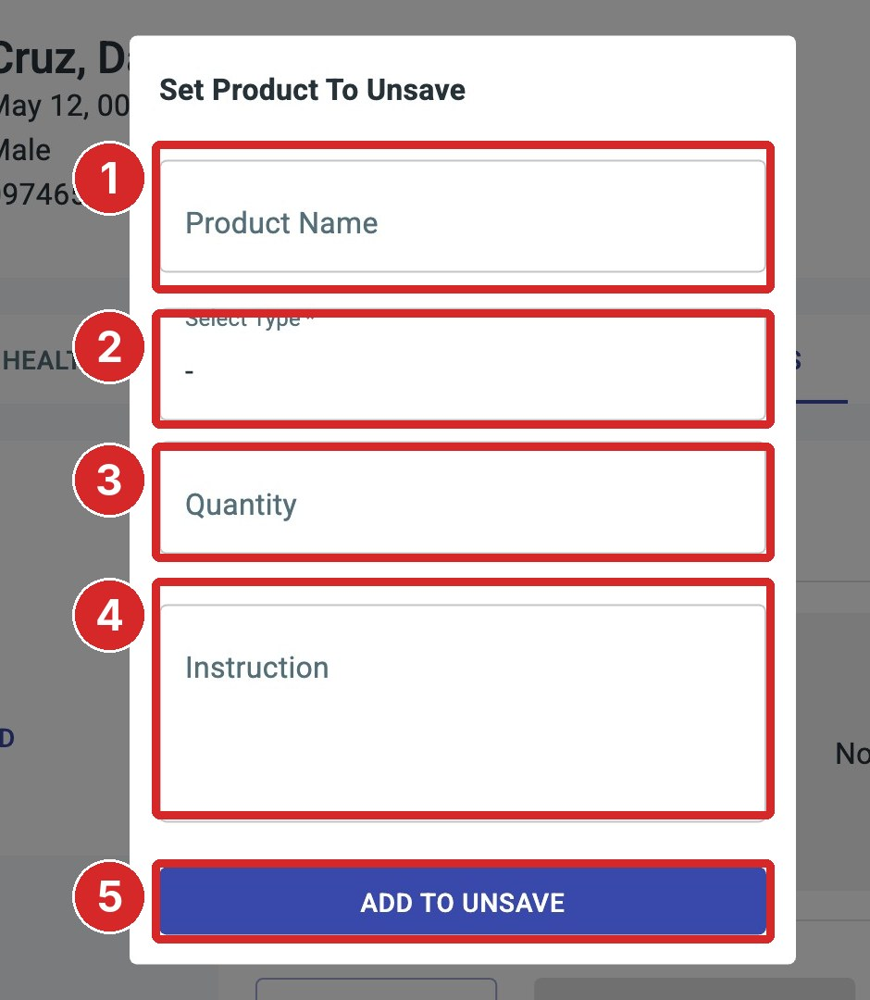
Figure 5.7. The Set Product To Unsave window.
1Product Name2Type3Quantity4Instruction (sig)5ADD TO UNSAVE
For a pharmacy: click CLINIC, choose the pharmacy under Select Pharmacy, then add products and save the same way.
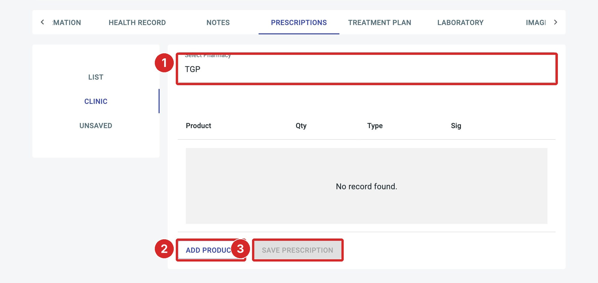
Figure 5.8. A prescription for a pharmacy (CLINIC).
1Select Pharmacy2ADD PRODUCT3SAVE PRESCRIPTION
NOTESAVE PRESCRIPTION stays grey until at least one product has been added.
SECTION 6
Laboratory and Imaging
The Laboratory and Imaging tabs work the same way: request tests, then view the results and attached files.
Open the Laboratory or Imaging tab (use the › arrow on the tab row if needed). LIST shows each result with its date and ID.
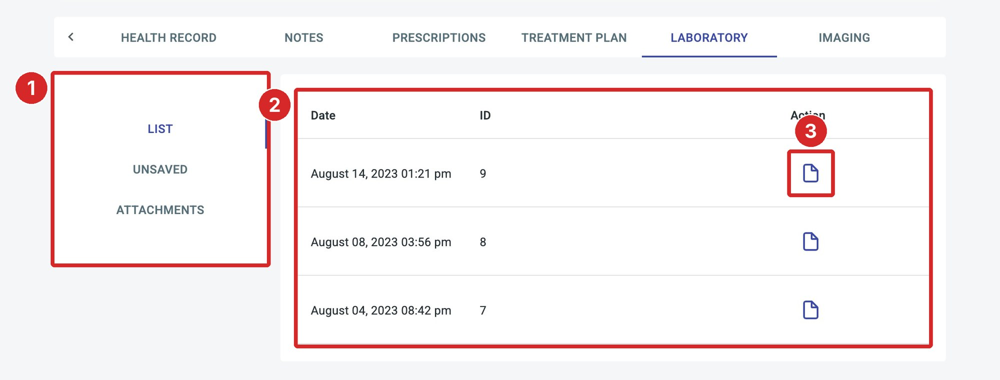
Figure 6.1. The Laboratory tab, LIST.
1LIST, UNSAVED and ATTACHMENTS2Results3Open result
Click the document icon under Action on a row.
The result opens. Laboratory results show each test (for example Hematology or CBC) with its description, result and normal values. Imaging results (for example ECG) show the result and impression.
Click DETAILS to see the printable copy, then PRINT to print it.
Click outside the window to close it.
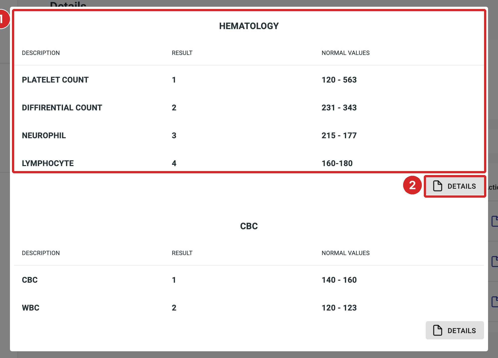
Figure 6.2. A laboratory result.
1Test with result and normal values2DETAILS button
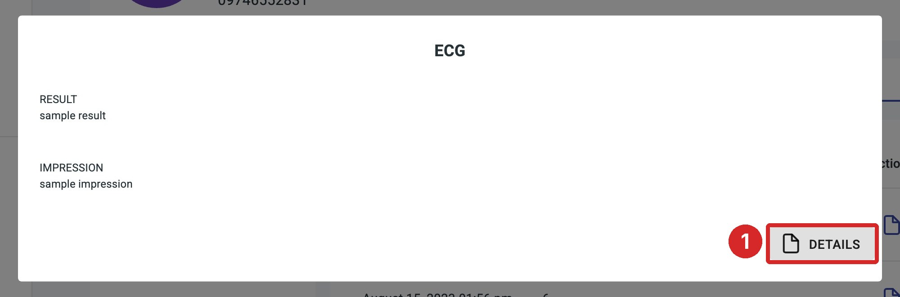
Figure 6.3. An imaging result (ECG).
1DETAILS button
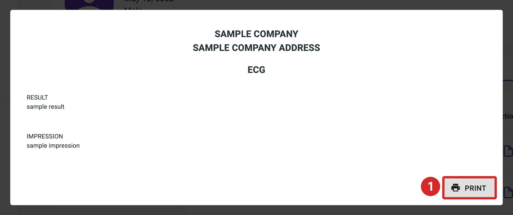
Figure 6.4. The printable result.
1PRINT button
6.2 Requesting tests
In the Laboratory or Imaging tab, click UNSAVED.
Click ADD TEST.
Under Select Test, choose the test. Each test shows its rate, for example CBC - 120 or Hematology - 300 in Laboratory, and ECG - 120 or X-ray - 220 in Imaging.
Click ADD TO UNSAVE. The test appears in the list with its rate.
Add more tests if needed, then click CONFIRM ALL to confirm the requests.
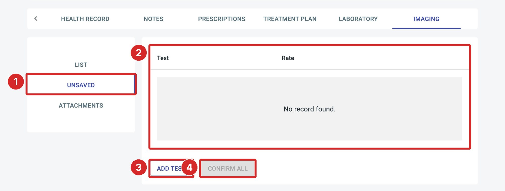
Figure 6.5. Requesting tests (UNSAVED).
1UNSAVED2Tests added so far3ADD TEST4CONFIRM ALL
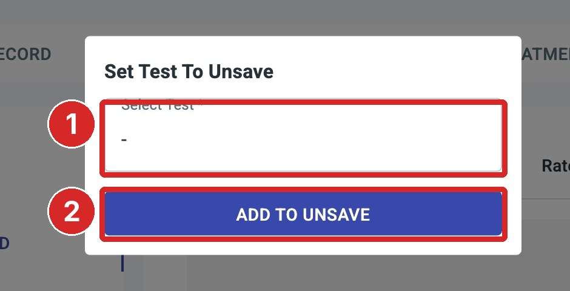
Figure 6.6. The Set Test To Unsave window.
1Select Test2ADD TO UNSAVE
NOTECONFIRM ALL stays grey until at least one test has been added.
6.3 Attachments
ATTACHMENTS lists files attached to the patient's laboratory or imaging record, with the date and who added them (for example patient, imaging or secretary). Use the arrows at the bottom to page through the list and List to choose how many rows to show.
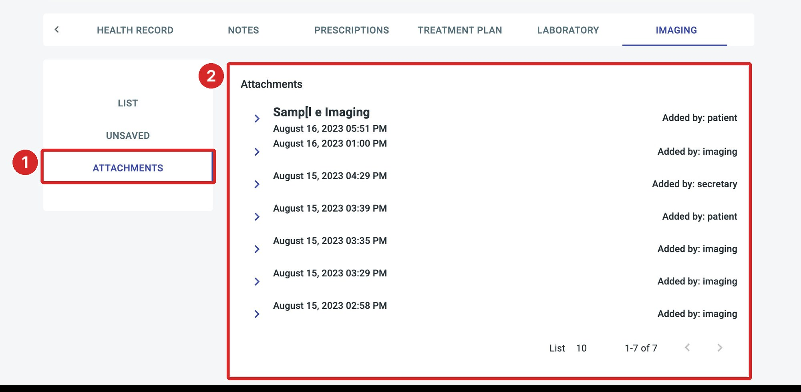
Figure 6.7. Imaging attachments.
1ATTACHMENTS2Attached files
SECTION 7
Services
The Services page lists the services you offer to patients and their fees.
Click Reports in the main menu. Each row shows the Date, Patient, Service and Rate.
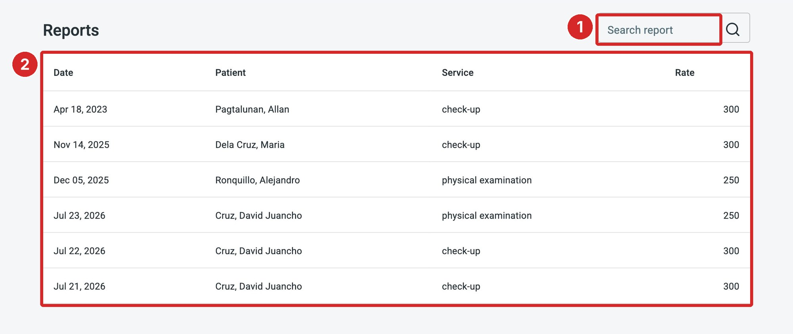
Figure 8.1. The Reports page.
1Search report2Consultations
Type in Search report to filter the list. The search matches the patient's name or the service; for example, physical shows only physical examinations.
SECTION 9
Account Settings
Use Account settings to keep your profile, email and password up to date.
Open Account from the account menu (1.4), or click your photo or name in the profile area. The Settings page has three tabs: General, Email and Security.
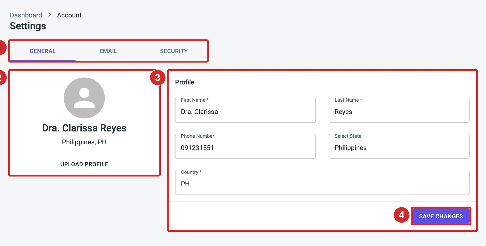
Figure 9.1. Account settings, General tab.
1GENERAL, EMAIL and SECURITY tabs2Photo and UPLOAD PROFILE3Profile details4SAVE CHANGES
To change your photo, click UPLOAD PROFILE and choose an image.
Edit your First Name, Last Name, Phone Number, State and Country. Fields marked * are required.
Click SAVE CHANGES.
9.2 Changing your email
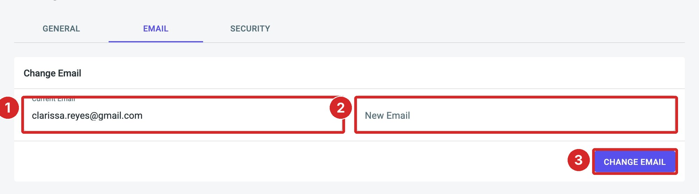
Figure 9.2. The Email tab.
1Current Email2New Email3CHANGE EMAIL
Click the EMAIL tab. Your current email is shown.
Type your New Email.
Click CHANGE EMAIL.
9.3 Changing your password
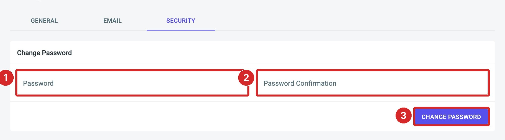
Figure 9.3. The Security tab.
1Password2Password Confirmation3CHANGE PASSWORD
Click the SECURITY tab.
Type the new Password, and type it again in Password Confirmation.
Click CHANGE PASSWORD.
IMPORTANT Use a password that others cannot guess, and change it right away if you think someone else knows it.
APPENDIX A
Quick Reference
Where to go for common tasks.
I want to…
Go to
See
See today's appointments
Appointment › TODAY › Day view
2.1, 2.2
Open a patient's record
Patient List › DETAILS, or an appointment › VIEW PATIENT PROFILE
3.1, 2.3
Record vital signs
Health Record › Pre-Lab › UPDATE
4.3
Add a diagnosis
Health Record › Diagnosis › NEW DIAGNOSIS
4.6
Write consultation notes
Notes › NEW NOTES
5.1
Write a prescription
Prescriptions › UNSAVED › ADD PRODUCT › SAVE PRESCRIPTION
5.3
Request a laboratory or imaging test
Laboratory or Imaging › UNSAVED › ADD TEST › CONFIRM ALL